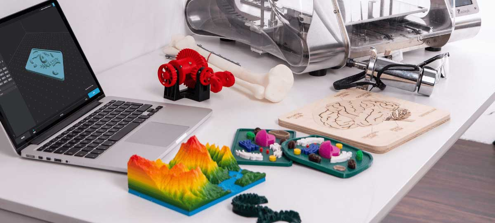

A 3D model represents geometry in 3D space. It is defined by vertices, edges and faces and also their position in 3D space (X, Y and Z axis). The most common file type for 3D printers is the STL (STereoLithography) file format and can be exported from a variety of softwares.
HOW can I make them?
3D models are made with CAD programs like Fusion360 or Moi3D. There is a learning curve to these type of programs nut fortunately it is not very steep, depending on what you need to do.

WHERE can I get them? - I am no designer
Getting hold of 3D models is not very hard. There are plenty of sites in the internet which provide them. The most popular site is Thingiverse, but there are also other sites like
Cults or CGTrader. You can search for what you need there, but be aware that some models need to be paid.